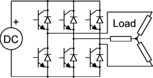

Inverters are the power electronic devices which acts as d.c to a.c converter. An inverter can convert a d.c power to an a.c power at desired output voltage level with desired frequency. The process of inversion can be realized through the following approaches :
- By controlled ON and OFF of power semiconductor switches (eg. Power mosfet, BJTs, IGBTs, etc)
- By forced commutation of thyristors.
Inverters can be of classified according to two parameters.
- Method of commutation.
- Connections of thyristors and commutating components.
- Method of commutation : Line commutation & Forced commutation.
Connections of thyristors and commutating components :
- Series inverter
- Parallel inverter
- Bridge inverters – Single-phase (full and half bridge) and three/poly-phase

3-ph bridge inverter operated in two modes :
i) 180° conduction mode: Each SCR has a duration of 180°. The SCRs of same arm operate in a complementary manner i.e with a time interval of 180° whereas the inverter arms are operated at a 120° phase difference.
ii) 120° conduction mode:· Each SCR has a duration of 120°. The SCRs of same arm operate with a ph difference of 180°.
 by
by